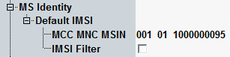

MS Identity
This section defines parameters of a default subscriber. These parameters are required for CS connection setup without previous location update.

MS identity settings
International mobile subscriber identity (IMSI) which is used to set up the connection to the MS if the mobile does not initiate a location update.
To configure in which situations the MS has to perform a location update, see "Location Update".
See also "Connection States".
Specifies default IMSI.
An IMSI consists of three parts:
- MCC: three-digit mobile country code
- MNC: two- or three-digit mobile network code, depending on the setting in the "Network > Identity" section.
- MSIN: 10- or nine-digit mobile subscriber identification number. A ten-digit MSIN is used together with a two-digit MNC; a nine-digit MSIN is used together with a three-digit MNC.
If enabled, the R&S CMW allows only the default IMSI to execute location update and attach. The attempts of location update and attach executed by other UEs are suppressed.
Remote command: